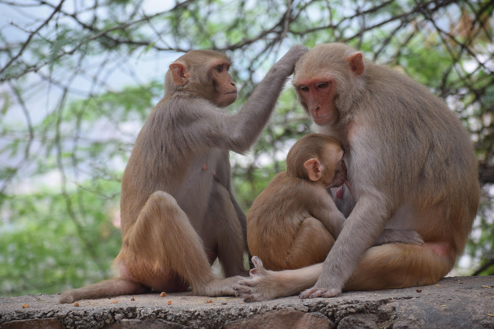
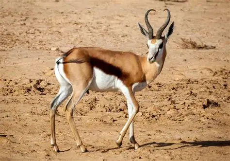
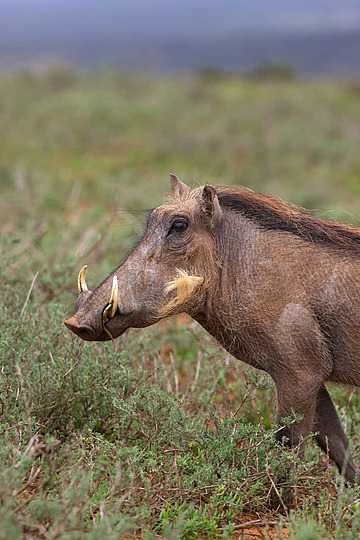
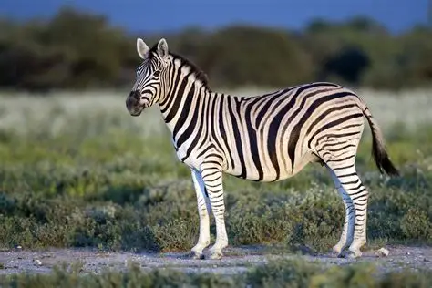

Monkeys
Our troop of velvet monkeys lives in the lush Monkey Canopy - a network of tropes, trees, and platforms that lets them swing, leap, and socialise just as they would in the wild. Watch them from the elevated Viewing Deck for an up-close experience.

Springboks
Botswana`s beloved antelope roams freely across the golden Springbok Praine. Famous for their spectacular leaping display called "pronking,"springboks are a symbol of the African savanna. They gather daily at the Springbok Drinking pool.

Warthogs
Rugged and resourceful, our warthogs love wallowing in the mud at the Warthog Wallow- its keeps them cool and protects their skin from insects. Despite their fierce appearance, warthogs are gentle gazers and great parents to their piglets.

Zebras
Our stripped residents graze across the wide Zebra Savanna and cool off at the Zebra Waterhole. No two zebras have the same stripe pattern-just like human fingerprints. Visitors can observe them up close from the savanna walkway